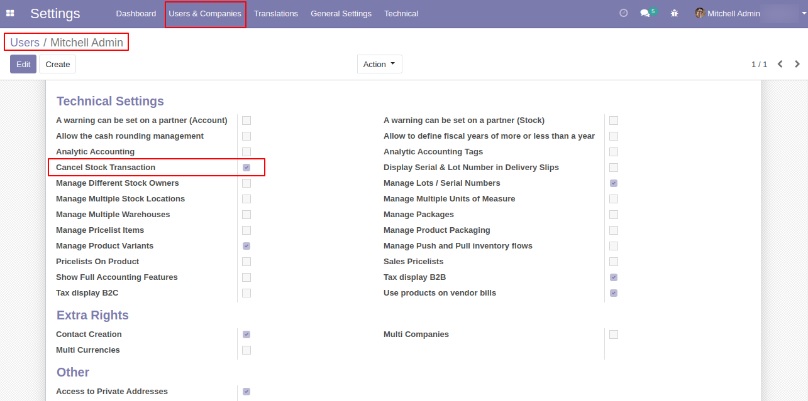
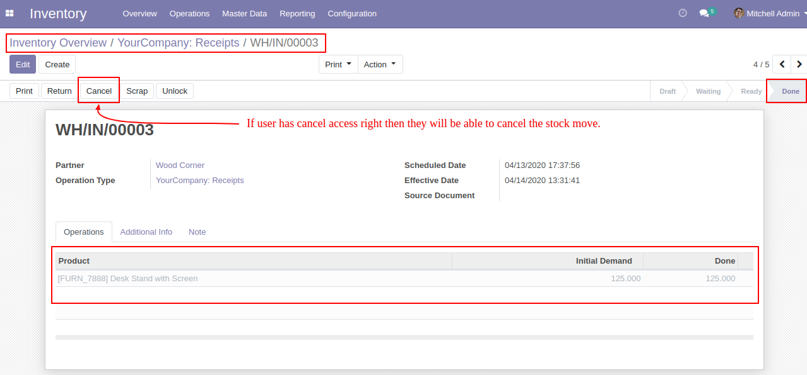
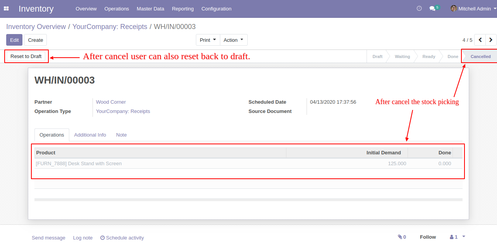
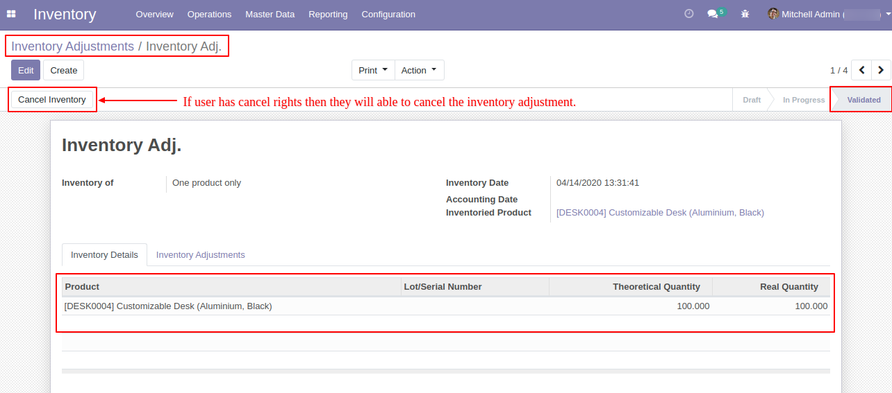
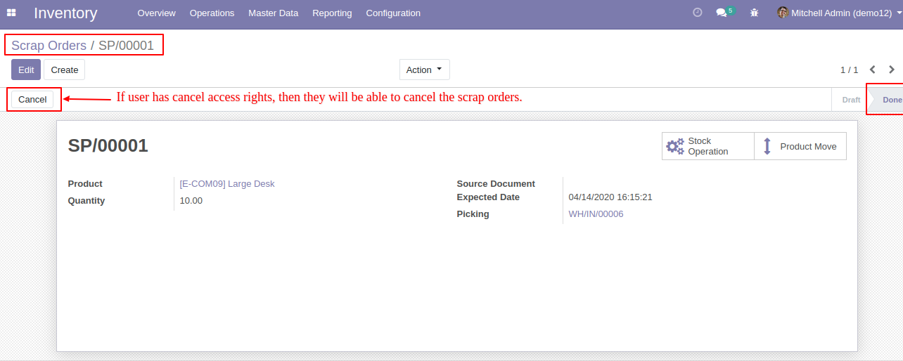
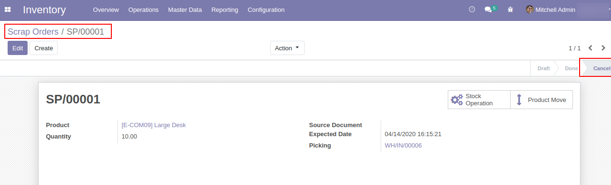

From Users Menu, there is access rights called "Cancel Stock Transaction". If user has this access rights then only they will able to cancel stock transaction.

From Transfers(picking) Menu, User can see the cancel button if they have Cancel Stock Transaction access rights.

When user cancel the stock picking related move also cancel and update the product on hand quantity.

From Inventory Adjustments, User can cancel the Validated inventory adjustments if they have access rights.

From Scrap Orders menu, User can cancel the scrap orders.

When user cancel the scrap order, it also cancel the related stock move.

Contact us for Support, Customization, Implementation
You will get 45 Days free support in case of Bugs/Issue exclude data recovery.